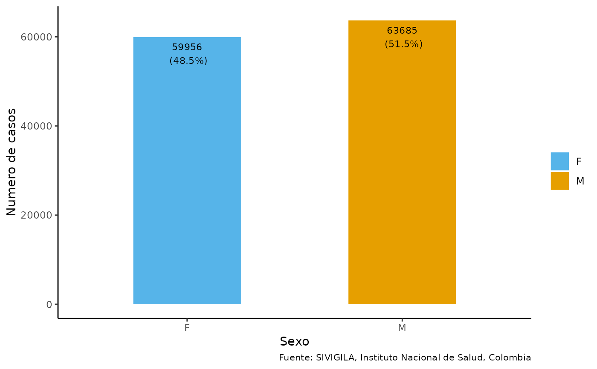

Generar gráfico por variable(s) o columna(s)
plot_variable.RdFunción que genera un gráfico por cualquier tipo de variable o columna de un data frame
Uso
plot_variable(
data,
var_x,
var_y,
var_por = NULL,
var_fill = NULL,
agr_per = TRUE,
etiqueta_x,
etiqueta_y,
nombre_escala = NULL,
etiquetas_escala = NULL,
tit_diagram = NULL,
pos_leyenda,
ancho_barra = 1,
tam_text = 3,
most_val = TRUE,
fuente_data = NULL
)Argumentos
- data
Un data frame con los datos a graficar
- var_x
Un character (cadena de caracteres) que contiene el nombre de la variable para el eje x
- var_y
Un character (cadena de caracteres) que contiene el nombre de la variable para el eje y
- var_por
Un character (cadena de caracteres) que contiene el nombre de la variable si los datos tienen porcentajes; su valor por defecto es NULL
- var_fill
Un character (cadena de caracteres) que contiene la variable de llenado; su valor por defecto es NULL
- agr_per
Un boolean (TRUE/FALSE) que indica si los datos tienen porcentajes; su valor por defecto es TRUE
- etiqueta_x
Un character (cadena de caracteres) que contiene la etiqueta para el eje x
- etiqueta_y
Un character (cadena de caracteres) que contiene la etiqueta para el eje y
- nombre_escala
Un character (cadena de caracteres) que contiene el nombre de la escala; su valor por defecto es NULL
- etiquetas_escala
Un array (arreglo) de character (cadena de caracteres) que contiene las etiquetas de la escala
- tit_diagram
Un character (cadena de caracteres) que contiene el título del diagrama; su valor por defecto es NULL
- pos_leyenda
Un character (cadena de caracteres) que contiene la posición de la leyenda
- ancho_barra
Un numeric (numerico) que contiene el ancho de las barras; su valor por defecto es 1
- tam_text
Un numeric (numerico) que contiene el tamaño del texto; su valor por defecto es 3
- most_val
Un boolean (TRUE/FALSE) que indica si las barras deben mostrar los valores; su valor por defecto es TRUE
- fuente_data
Un character (cadena de caracteres) que contiene la leyenda o fuente de información de los datos; su valor por defecto es NULL
Ejemplos
data(dengue2020)
data_event <- dengue2020
data_event <- limpiar_data_sivigila(data_event, 2020)
cases_sex <- agrupar_sex(data_event,
porcentaje = TRUE)
plot_variable(data = cases_sex,
var_x = "sexo",
var_y = "casos",
var_fill = "sexo",
var_por = "porcentaje",
etiqueta_x = "Sexo",
etiqueta_y = "Numero de casos",
nombre_escala = "Sexo",
etiquetas_escala = c("Femenino", "Masculino"),
pos_leyenda = "right",
ancho_barra = 0.5,
tam_text = 3,
most_val = TRUE
)
